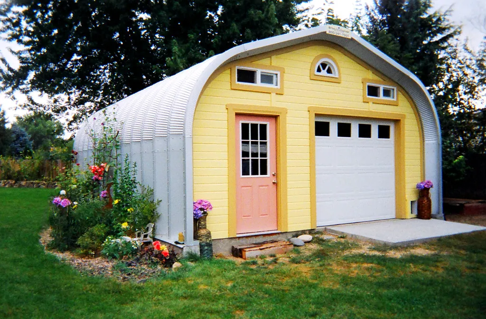

Simple Home Repairs
The small, satisfying fixes that keep a home snug and cared-for: silencing a squeaky door, freshening tired caulk, sealing a drafty window, and reviving a weak faucet — with every safety step flagged clearly.

Before you begin
The little repairs in this guide are simple, low-risk, and genuinely satisfying — the sort of jobs that make a home feel cared-for and can save a good deal on callouts. But a few words first.
Safety first: We cover only simple, surface-level tasks here. We do not cover electrical work, gas appliances, plumbing hidden behind walls, or anything structural. Those jobs carry real risk and belong to a licensed professional every time. If a task starts to feel beyond a simple fix, stop, and call someone qualified — that is wisdom, not defeat.
A simple home tool kit
You do not need a garage full of equipment to handle a home's small needs — a modest kit covers almost everything in this guide and more. If you are starting from scratch, a few well-chosen basics will serve you for decades.
- A claw hammer and a small selection of nails.
- Two screwdrivers — one flat-head, one cross-head (Phillips) — or a single one with changeable tips.
- An adjustable wrench and a pair of pliers.
- A tape measure, a pencil, and a small spirit level.
- A utility knife, some sandpaper, and a tube of multi-purpose household lubricant.
- A sturdy step stool with a handrail — safer by far than a chair for reaching.
Keep them together in a box or a drawer so you are not hunting when something needs attention. Good tools, cared for and kept dry, last a lifetime, and there is a quiet satisfaction in having the right thing to hand when a small job appears.
Silencing a squeaky door
A squeaking door is one of the most satisfying things to fix, because the cure takes two minutes and the quiet lasts for months.
What you'll need
- A household lubricant — a few drops of oil, or a bar of soap or candle wax in a pinch
- A cloth to catch drips
- Find the hinge that squeaks by opening and closing the door slowly and listening.
- Apply a little lubricant to the hinge pin at the top of the hinge.
- Open and close the door several times to work it in.
- Wipe away any excess with your cloth so it does not drip onto the floor.
Tip: If the squeak persists, gently tap the hinge pin up and out with a screwdriver and a hammer, rub it with a little oil or wax, and slide it back in. This reaches the parts a surface drop cannot.
Freshening tired caulk
The caulk around a bathtub, sink, or window is a home's weather seal, and over time it cracks, shrinks, and darkens. Replacing it keeps water where it belongs and freshens a room remarkably.
What you'll need
- A tube of caulk suited to the job (kitchen-and-bath caulk for wet areas)
- A caulk gun
- A plastic scraper or an old butter knife
- A cloth and some rubbing alcohol
- Scrape out all the old, cracked caulk and wipe the gap clean and dry.
- Wipe the area with a little rubbing alcohol and let it dry fully.
- Cut the caulk tube's nozzle at a slant to match the gap's width, and load the gun.
- Run a steady, even bead of caulk along the gap in one smooth motion.
- Smooth the bead with a damp fingertip, wipe away the excess, and let it cure as the label directs before use.
Tip: Follow the tube's label for drying time — most need several hours, and bathroom caulk needs a full day before the tub or shower is used again. The label is always your best guide.
Sealing a drafty window
A drafty window steals warmth in winter and comfort all year. Sealing one is cheap, simple, and pays for itself quickly in a lower heating bill.
- On a breezy day, run a hand around the window frame to feel where cold air sneaks in — the edges and the sashes are usual culprits.
- For gaps around the frame, apply self-adhesive weatherstripping, cut to length and pressed firmly into place.
- For a gap under a sliding sash, a rolled draft stopper or a strip of foam tape seals it well.
- For a larger, fixed window in a cold snap, a clear plastic insulating film, shrunk tight with a hair dryer, is a tidy seasonal fix.
Tip: Weatherstripping comes in several types — foam, felt, and rubber. The foam tapes are the easiest for a beginner and seal most gaps well; keep the surface clean and dry so the adhesive grips.
Reviving a weak faucet
If a faucet's flow has grown weak or spitty, the culprit is usually the little aerator screwed onto its tip, clogged with mineral deposits. Cleaning it is one of the easiest fixes in the house and restores the flow like new.
- Unscrew the aerator from the faucet tip by hand, turning it toward you; if it is stuck, grip it gently with a cloth-wrapped pair of pliers.
- Take it apart, noting the order of the little screens and washers.
- Soak the parts in white vinegar for an hour to dissolve the mineral buildup, then rinse and brush away any grit with an old toothbrush.
- Reassemble the parts in the same order and screw the aerator back on, hand-tight.
- Run the faucet and enjoy the restored flow.
A gentle maintenance routine
Most home troubles are far cheaper to prevent than to cure, and a little regular attention keeps the small things from becoming big ones. You need no schedule more complicated than a slow walk around the house a couple of times a year, looking and listening for anything that wants a touch of care.
In spring, check that gutters are clear of winter debris so rain drains away from the house, look over the caulk around tubs and windows, and test that doors and windows open smoothly. In fall, seal up any drafts before the cold sets in, bleed the first dust from heating vents, and make sure outdoor taps are protected from freezing. Through the year, deal with little things as you notice them — the loose screw, the dripping tap, the sticking drawer — rather than letting them wait. A home kept this way stays comfortable, safe, and far less likely to spring an expensive surprise.
Tip: Keep a small running list on the fridge or in your tool box of little jobs as you notice them. Tackling two or three on a free afternoon is far pleasanter than facing a long list all at once, and nothing gets forgotten.
A special word about water
Of all the small repairs, those involving water deserve extra care, because water does quiet, expensive damage when it goes where it should not. The surface jobs in this guide — a worn caulk line, a clogged aerator, a drip you can see and reach — are safe for anyone. But the moment a problem goes beyond the visible fixture and into the pipes within the walls or under the floor, it becomes a job for a licensed plumber.
Know where your home's main water shut-off valve is, and how to turn it, before you ever need it; in a sudden leak, that knowledge can save a floor or a ceiling. If you find yourself facing a persistent leak, a damp patch spreading on a wall or ceiling, or any plumbing hidden from view, resist the urge to dig deeper and call a professional. Water damage caught early and handled properly costs a fraction of what it costs once it has spread, and a good plumber is worth every penny when pipes are involved.
Knowing when to call a professional
Part of being handy is knowing the limits of handiness. The jobs above are safe for almost anyone, but many are not, and there is real wisdom in calling a licensed professional for anything that carries risk.
Always call a professional for electrical work of any kind, for gas appliances, for plumbing inside the walls or involving the main lines, for roofing and anything that needs a tall ladder, and for any work that affects the structure of the house. These jobs can cause serious harm or costly damage if they go wrong, and a qualified tradesperson has the training, the tools, and the insurance that you do not. Spending a little to have such work done properly is not a failure of thrift; it is the soundest kind of economy.
There is also no shame whatever in calling a handyman for the simpler jobs if they have grown difficult for you. As hands stiffen and balance changes, tasks that were once easy can become genuinely risky, and knowing your own limits is a mark of wisdom, not weakness. A trusted local handyman, a helpful neighbor, or a willing grandchild can take on the climbing and the kneeling while you direct the work and enjoy the result. The goal is a well-kept home, and there are many good ways to reach it. For the gentler, greener side of keeping a home, the garden is always waiting.